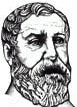

Heron von Alexandria war ein antiker Mathematiker und Ingenieur. Seine Werke sind teilweise nur fragmentarisch überliefert. Sie beschäftigen sich unter anderem mit mathematischen, optischen und mechanischen Themen. Bekannt sind vor allem seine Ausführungen zu automatischen Geräten und der Ausnutzung von Wasser und Luft als treibende Kraft. Diese Entwürfe bildeten die Basis für die Erfindung der Dampf-Maschine im achtzehnten Jahrhundert.